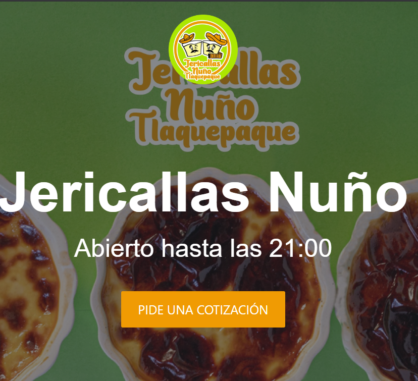

Habilidades
{ } Desarrollo Frontend
[ ] Backend & Terminal
Ingeniero en Sistemas Computacionales con experiencia en soporte técnico en redes y telecomunicaciones. Mi enfoque profesional está dirigido al desarrollo backend, donde aprovecho mi mentalidad analítica y habilidades de resolución de problemas para crear soluciones robustas. Mi experiencia en infraestructura de red y monitoreo de sistemas me brinda una comprensión integral de cómo los sistemas backend interactúan con la infraestructura tecnológica general.
Soporte de producción y desarrollo para operador de telecomunicaciones en Estados Unidos:
Desarrollo de aplicaciones web en entorno ágil:
Responsable de monitorear, diagnosticar y resolver incidencias en redes y sistemas de telecomunicaciones:
Sistema de comercio electrónico. Con gestión de inventario, procesamiento de pedidos.
Ver Proyecto
Sistema de comercio electrónico con enfoque en backend. Incluye gestión de inventario, procesamiento de pedidos.
Ver Proyecto
Desarrollo de sitio web responsivo para visualización de catálogo de productos y formulario de contacto.
Ver ProyectoPrograma intensivo de desarrollo con enfoque en tecnologías Java backend y desarrollo web.
Especialización en gestión de proyectos tecnológicos, metodologías ágiles y dirección de equipos.
Formación en programación, diseño de sistemas, redes y administración de bases de datos.
cervantesnunopedro@gmail.com
+52 3323676337